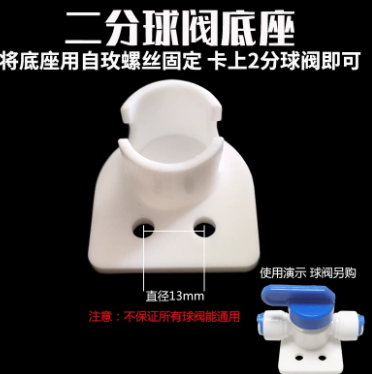

净水方案
人体的肾很强，过滤能力很强，但肾再强也有限度，而且随着年龄增长，更应该给肾减轻负担，因此现世中，我们应该利用物理过滤出纯净水引用
核心原则：节点尽可能少，尽可能采用机械设计，减少中间环节，减少未来故障点，综合考虑有泵方案和无泵方案，最终决定用后者
有泵方案，二级ro膜串联，废水比可以降低到1:5

无泵方案，废水比1:1，RO膜净水部分采用双球阀开关设计（替代四面阀方案），每次使用净水前，先在关闭净水龙头，开启30s球阀龙头，开启净水球阀开关，冲洗18~30s后关闭冲洗球阀开关，打开净水龙头正常使用即可。

开关球阀1和2分别通过底座固定到大白瓶顶盖上或者墙壁，直接用现在华凌的壳进行改装就行

1. RO膜规格建议：建议 400G 或 600G
对于无泵系统，不建议选择常见的800G或1000G大规格，也不建议选太小的50G/75G。
- 为什么选400G/600G？
- 产水效率： 无泵系统的动力仅靠自来水压（通常2-4kg）。由于没有泵的高压（5-8kg），RO膜的实际产水量会缩减到标称值的30%-50%。400G的膜在无泵状态下，流速大约等同于普通饮水机的细水长流，能勉强满足2人日常饮用和煮饭。
- 废水比控制： 膜规格越大，对压力要求越高。如果选800G以上的膜而水压不足，废水会极多，且膜容易迅速堵塞。
- 关键指标： 选购时请务必认准“低压膜”（Low Pressure Membrane）。
2. 前置3级配置方案
为了保护无泵系统的RO膜，前置过滤必须尽量减小压降（Pressure Drop）：
-
第一级：5微米PP棉（拦截泥沙、铁锈）。
-
第二级：颗粒活性炭 (UDF)（吸附余氯）。注意：不要选压缩活性炭(CTO)，因为CTO阻力大，会进一步降低RO膜前的进水压力。
-
第三级：1微米PP棉（防止活性炭碎末进入RO膜）。
废水比阀（比例器）的核心作用是在膜腔内建立压力。废水规格（cc值）的大小，本质上是在滤膜寿命和出水效率之间做平衡。
1. 如果 cc 值选得太大（废水排得太多）
- 后果： 膜腔内压力不足。
- 产水慢： 就像漏风的风箱，压力都从废水管跑了，推不动水分子穿过 RO 膜。
- 水质差（TDS值高）： 因为压力不够，RO 膜的脱盐率会下降，过滤不彻底。
- 浪费水： 纯水出一小杯，废水流了一大桶。
2. 如果 cc 值选得太小（废水排得太少）
- 后果： 膜腔内压力极高，浓水浓度过大。
- 容易堵塞： 钙、镁等离子排不出去，会在膜表面迅速结晶（结垢）。可能原本能用 2 年的膜，3 个月就报废了。
- 损坏硬件： 尤其在无泵系统中，虽然压力来自自来水，但如果完全堵死废水，压力会导致滤瓶或接头爆裂。
3. 如何判断 cc 值是否合适？
你可以参考下表来衡量你的 600G 系统在不同规格下的表现：
| 废水阀规格 | 对膜的影响 | 对出水的影响 | 适用场景 |
|---|---|---|---|
| 偏小 (如 800cc) | 容易结垢，寿命短 | 产水速度快，TDS低 | 原水 TDS 较低（<100）的地区 |
| 标准 (如 1000-1200cc) | 寿命与效率平衡 | 产水稳定 | 大多数家庭 |
| 偏大 (如 1500cc+) | 膜很干净，寿命长 | 产水极慢，TDS偏高 | 无泵方案不建议，除非水压极高 |
先从800cc开始测试，然后1200cc-1600cc，tds笔测值是否有升高，找到最合适的值